Chapter 8 Task 359956
We present the results of our analysis of task 359956 with the different selection set splits used in our study.
8.1 5%
8.1.1 Test accuracy
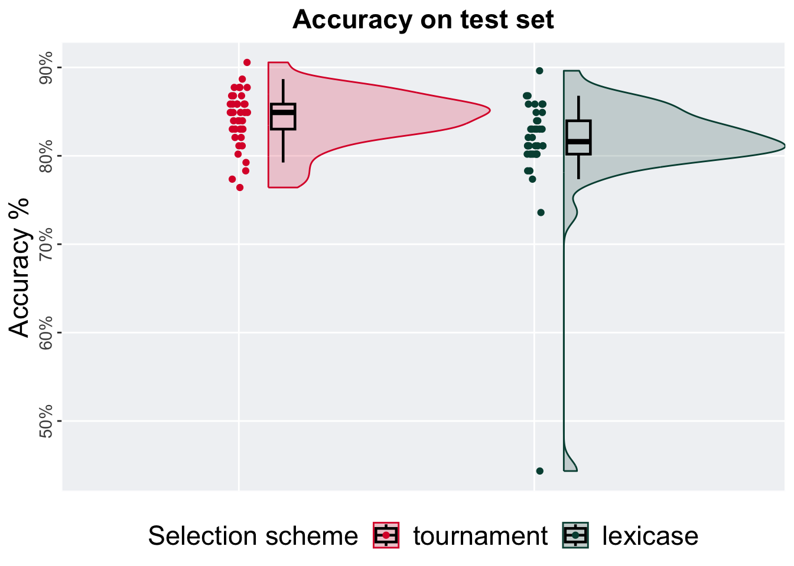
Summary statistics for the testing performance of the selection schemes at the 5% selection set split:
## # A tibble: 2 × 8
## selection count na_cnt min median mean max IQR
## <fct> <int> <int> <dbl> <dbl> <dbl> <dbl> <dbl>
## 1 tournament 40 0 0.764 0.849 0.842 0.906 0.0283
## 2 lexicase 40 0 0.443 0.816 0.813 0.896 0.0377The permutation test revealed that the results are:
tournament_results <- filter(task_data, split == '5%' & selection == 'tournament')
lexicase_results <- filter(task_data, split == '5%' & selection == 'lexicase')
permutation_test(tournament_results$testing_performance,
lexicase_results$testing_performance,
seed = 61,
alternative = "g")## [1] "observed_diff: 2.49264287194845"
## [1] "permutation_diffs[0.95 * n_permutations]: 1.5647718135028"
## [1] "reject null hypothesis"
## [1] "p-value: 0.00143"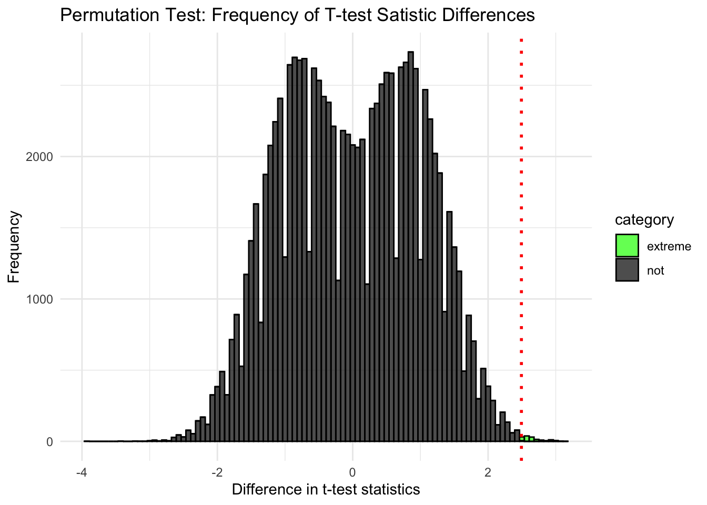
8.1.2 Selection set accuracy
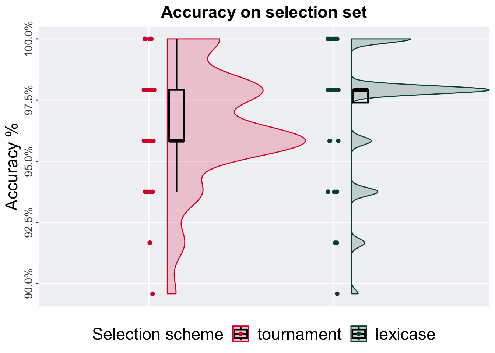
Summary statistics for the testing performance of the selection schemes at the 5% selection set split:
## # A tibble: 2 × 8
## selection count na_cnt min median mean max IQR
## <fct> <int> <int> <dbl> <dbl> <dbl> <dbl> <dbl>
## 1 tournament 40 0 0.896 0.958 0.965 1 0.0208
## 2 lexicase 40 0 0.896 0.979 0.973 1 0.00521The permutation test revealed that the results are:
tournament_results <- filter(task_data, split == '5%' & selection == 'tournament')
lexicase_results <- filter(task_data, split == '5%' & selection == 'lexicase')
permutation_test(tournament_results$training_performance,
lexicase_results$training_performance,
seed = 62,
alternative = "t")## [1] "observed_diff: -1.50090531983546"
## [1] "lower: -2.09080286669461"
## [1] "upper: 1.89155678516992"
## [1] "fail to reject null hypothesis"
## [1] "p-value: 0.11353"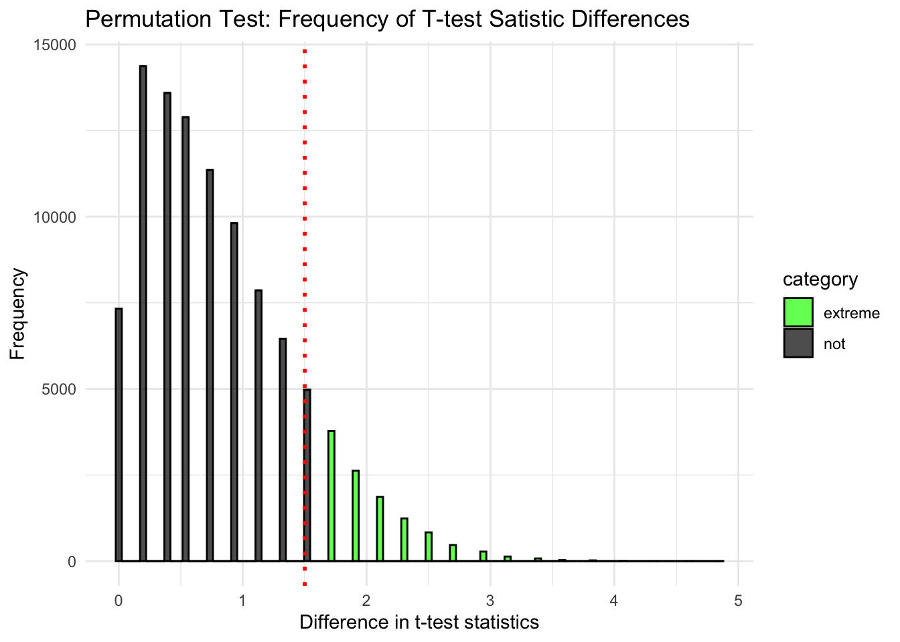
8.2 10%
8.2.1 Test accuracy
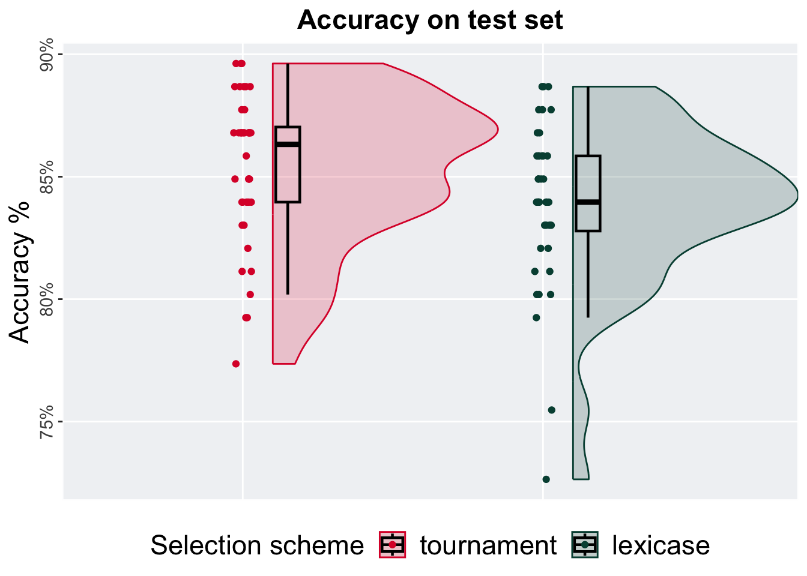
Summary statistics for the testing performance of the selection schemes at the 5% selection set split:
## # A tibble: 2 × 8
## selection count na_cnt min median mean max IQR
## <fct> <int> <int> <dbl> <dbl> <dbl> <dbl> <dbl>
## 1 tournament 40 0 0.774 0.863 0.853 0.896 0.0307
## 2 lexicase 40 0 0.726 0.840 0.839 0.887 0.0307The permutation test revealed that the results are:
tournament_results <- filter(task_data, split == '10%' & selection == 'tournament')
lexicase_results <- filter(task_data, split == '10%' & selection == 'lexicase')
permutation_test(tournament_results$testing_performance,
lexicase_results$testing_performance,
seed = 63,
alternative = "g")## [1] "observed_diff: 1.92031097297846"
## [1] "permutation_diffs[0.95 * n_permutations]: 1.65010001663041"
## [1] "reject null hypothesis"
## [1] "p-value: 0.03129"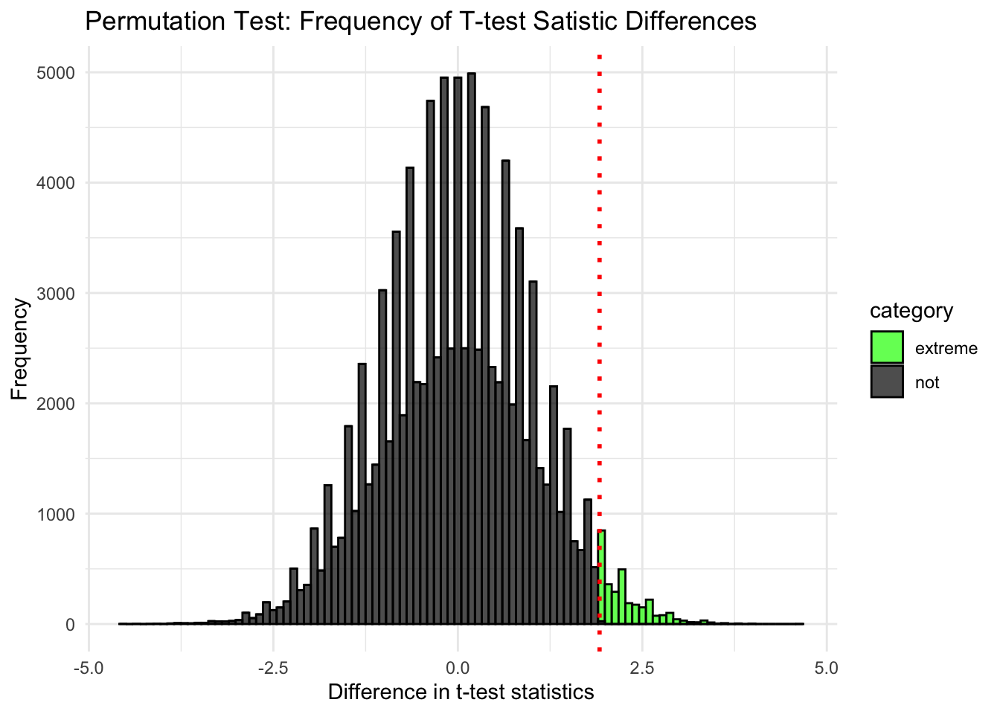
8.2.2 Selection set accuracy
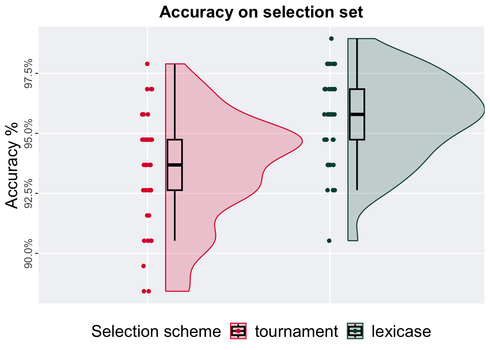
Summary statistics for the testing performance of the selection schemes at the 5% selection set split:
## # A tibble: 2 × 8
## selection count na_cnt min median mean max IQR
## <fct> <int> <int> <dbl> <dbl> <dbl> <dbl> <dbl>
## 1 tournament 40 0 0.884 0.937 0.936 0.979 0.0211
## 2 lexicase 40 0 0.905 0.958 0.956 0.989 0.0211The permutation test revealed that the results are:
tournament_results <- filter(task_data, split == '10%' & selection == 'tournament')
lexicase_results <- filter(task_data, split == '10%' & selection == 'lexicase')
permutation_test(tournament_results$training_performance,
lexicase_results$training_performance,
seed = 64,
alternative = "l")## [1] "observed_diff: -4.41624262918063"
## [1] "permutation_diffs[0.05 * n_permutations]: -1.64847676079247"
## [1] "reject null hypothesis"
## [1] "p-value: 1e-05"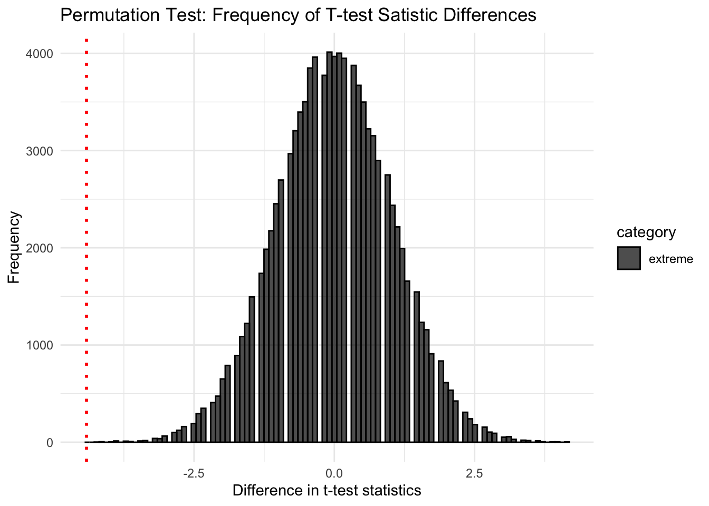
8.3 50%
8.3.1 Test accuracy
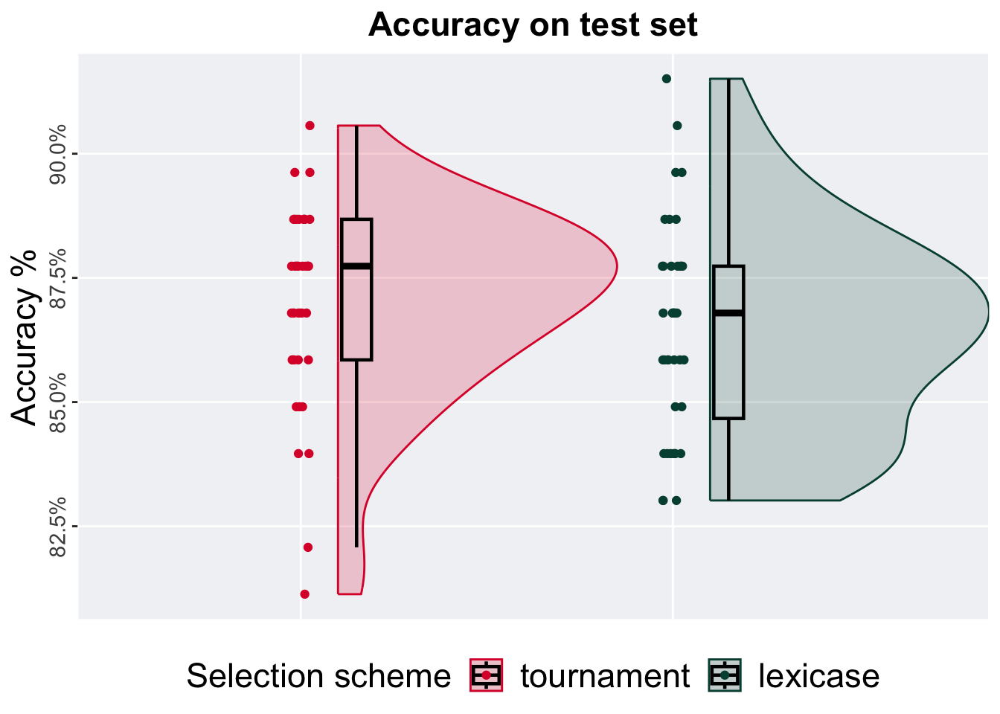
Summary statistics for the testing performance of the selection schemes at the 5% selection set split:
## # A tibble: 2 × 8
## selection count na_cnt min median mean max IQR
## <fct> <int> <int> <dbl> <dbl> <dbl> <dbl> <dbl>
## 1 tournament 40 0 0.811 0.877 0.870 0.906 0.0283
## 2 lexicase 40 0 0.830 0.868 0.864 0.915 0.0307The permutation test revealed that the results are:
tournament_results <- filter(task_data, split == '50%' & selection == 'tournament')
lexicase_results <- filter(task_data, split == '50%' & selection == 'lexicase')
permutation_test(tournament_results$testing_performance,
lexicase_results$testing_performance,
seed = 65,
alternative = "t")## [1] "observed_diff: 1.23535069775879"
## [1] "lower: -1.98545740292316"
## [1] "upper: 1.98545740292316"
## [1] "fail to reject null hypothesis"
## [1] "p-value: 0.20292"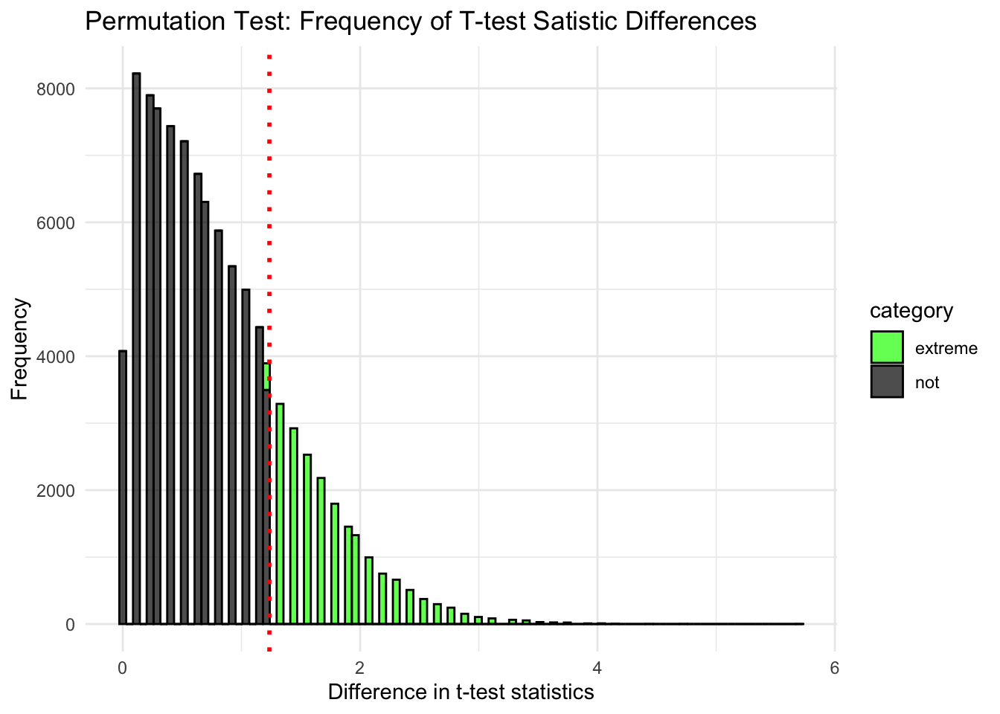
8.3.2 Selection set accuracy
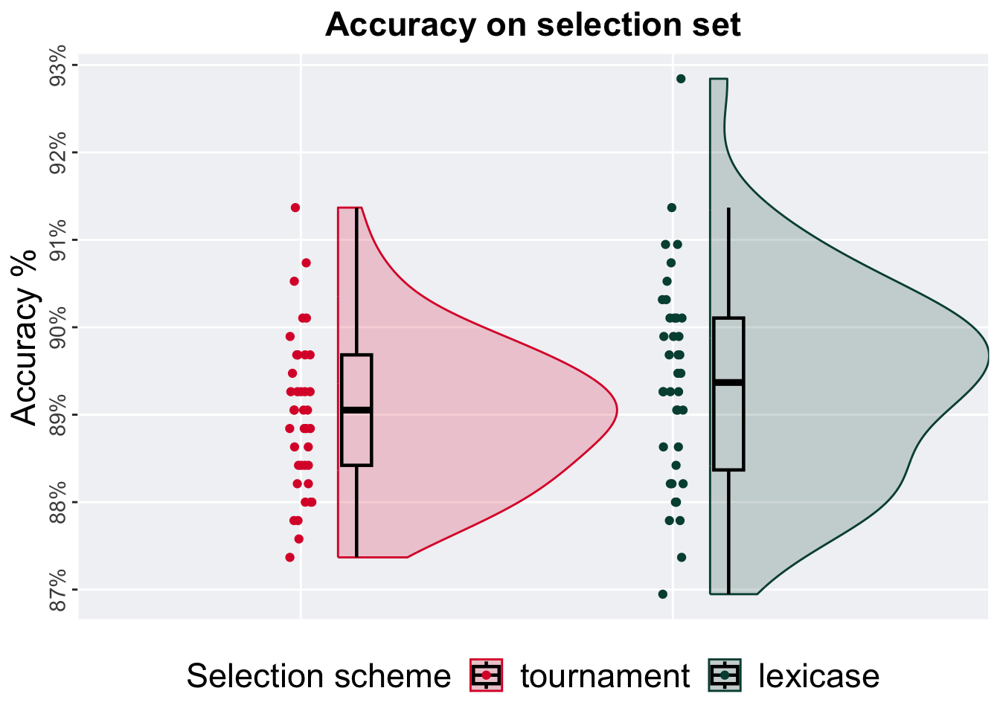
Summary statistics for the testing performance of the selection schemes at the 5% selection set split:
## # A tibble: 2 × 8
## selection count na_cnt min median mean max IQR
## <fct> <int> <int> <dbl> <dbl> <dbl> <dbl> <dbl>
## 1 tournament 40 0 0.874 0.891 0.890 0.914 0.0126
## 2 lexicase 40 0 0.869 0.894 0.894 0.928 0.0174The permutation test revealed that the results are:
tournament_results <- filter(task_data, split == '50%' & selection == 'tournament')
lexicase_results <- filter(task_data, split == '50%' & selection == 'lexicase')
permutation_test(tournament_results$training_performance,
lexicase_results$training_performance,
seed = 66,
alternative = "t")## [1] "observed_diff: -1.49419701600044"
## [1] "lower: -2.00690565895584"
## [1] "upper: 2.00690565895579"
## [1] "fail to reject null hypothesis"
## [1] "p-value: 0.13664"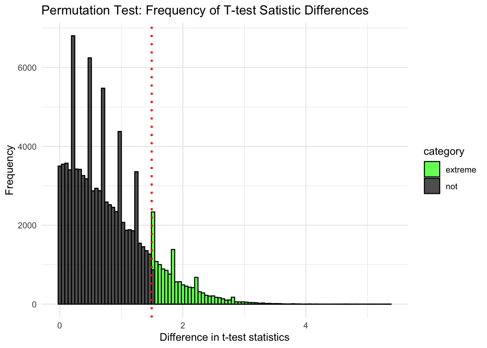
8.4 90%
8.4.1 Test accuracy
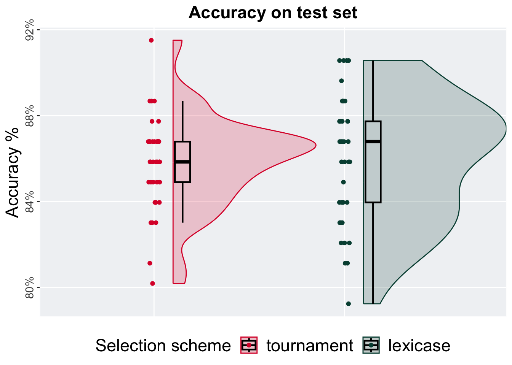
Summary statistics for the testing performance of the selection schemes at the 5% selection set split:
## # A tibble: 2 × 8
## selection count na_cnt min median mean max IQR
## <fct> <int> <int> <dbl> <dbl> <dbl> <dbl> <dbl>
## 1 tournament 40 0 0.802 0.858 0.858 0.915 0.0189
## 2 lexicase 40 0 0.792 0.868 0.860 0.906 0.0377The permutation test revealed that the results are:
tournament_results <- filter(task_data, split == '90%' & selection == 'tournament')
lexicase_results <- filter(task_data, split == '90%' & selection == 'lexicase')
permutation_test(tournament_results$testing_performance,
lexicase_results$testing_performance,
seed = 67,
alternative = "t")## [1] "observed_diff: -0.288985153074226"
## [1] "lower: -1.98779654792212"
## [1] "upper: 1.98779748996659"
## [1] "fail to reject null hypothesis"
## [1] "p-value: 0.75562"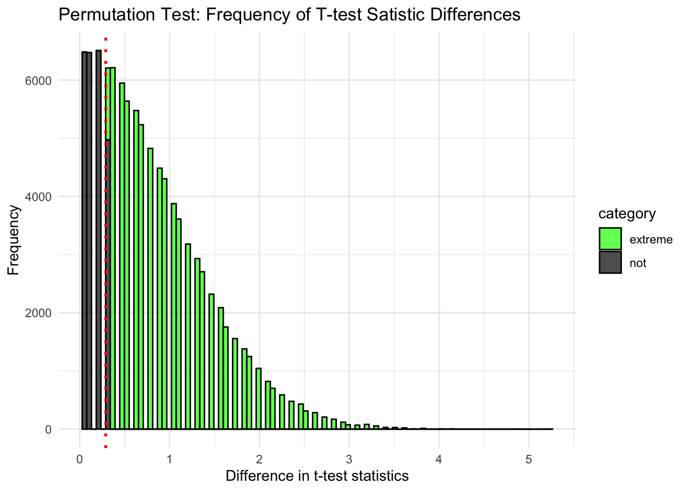
8.4.2 Selection set accuracy
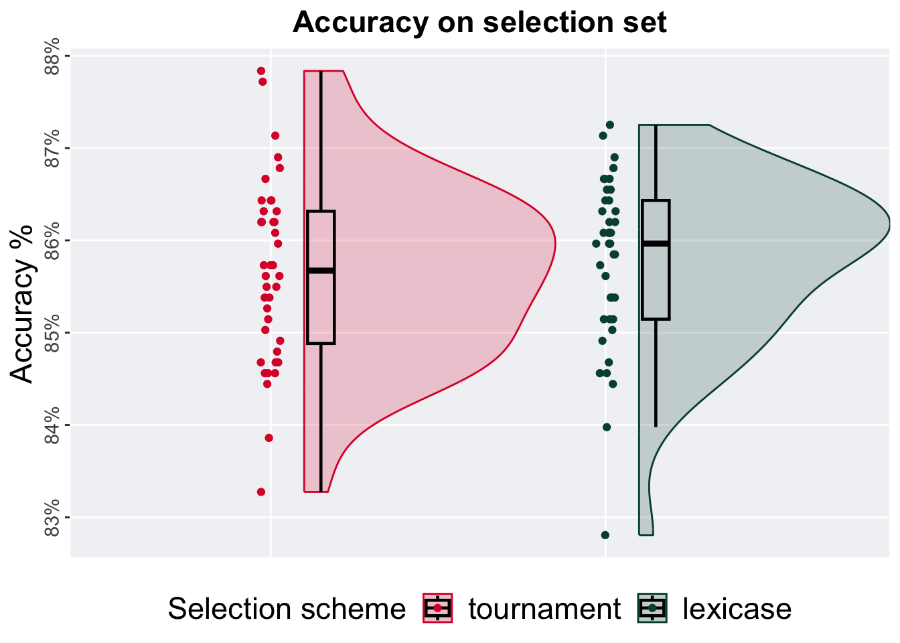
Summary statistics for the testing performance of the selection schemes at the 5% selection set split:
## # A tibble: 2 × 8
## selection count na_cnt min median mean max IQR
## <fct> <int> <int> <dbl> <dbl> <dbl> <dbl> <dbl>
## 1 tournament 40 0 0.833 0.857 0.857 0.878 0.0143
## 2 lexicase 40 0 0.828 0.860 0.858 0.873 0.0129The permutation test revealed that the results are:
tournament_results <- filter(task_data, split == '90%' & selection == 'tournament')
lexicase_results <- filter(task_data, split == '90%' & selection == 'lexicase')
permutation_test(tournament_results$training_performance,
lexicase_results$training_performance,
seed = 68,
alternative = "t")## [1] "observed_diff: -0.519105003995363"
## [1] "lower: -1.98476786090786"
## [1] "upper: 1.98476961848034"
## [1] "fail to reject null hypothesis"
## [1] "p-value: 0.60049"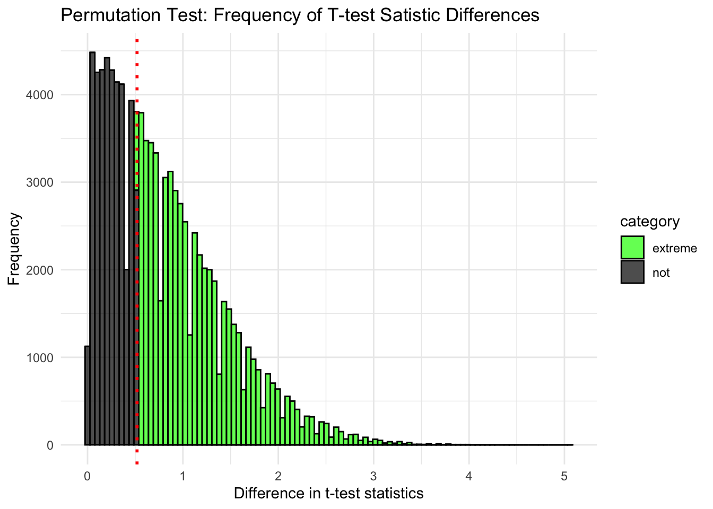
8.5 95%
8.5.1 Test accuracy
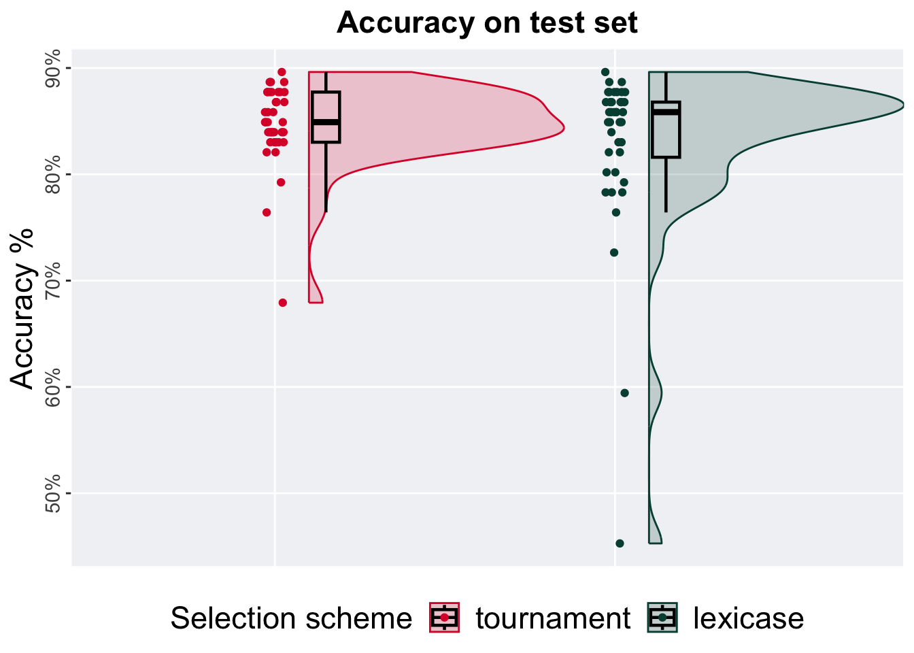
Summary statistics for the testing performance of the selection schemes at the 5% selection set split:
## # A tibble: 2 × 8
## selection count na_cnt min median mean max IQR
## <fct> <int> <int> <dbl> <dbl> <dbl> <dbl> <dbl>
## 1 tournament 40 0 0.679 0.849 0.847 0.896 0.0472
## 2 lexicase 40 0 0.453 0.858 0.828 0.896 0.0519The permutation test revealed that the results are:
tournament_results <- filter(task_data, split == '95%' & selection == 'tournament')
lexicase_results <- filter(task_data, split == '95%' & selection == 'lexicase')
permutation_test(tournament_results$testing_performance,
lexicase_results$testing_performance,
seed = 69,
alternative = "t")## [1] "observed_diff: 1.33590135470976"
## [1] "lower: -1.91908070055885"
## [1] "upper: 1.91908070055885"
## [1] "fail to reject null hypothesis"
## [1] "p-value: 0.20293"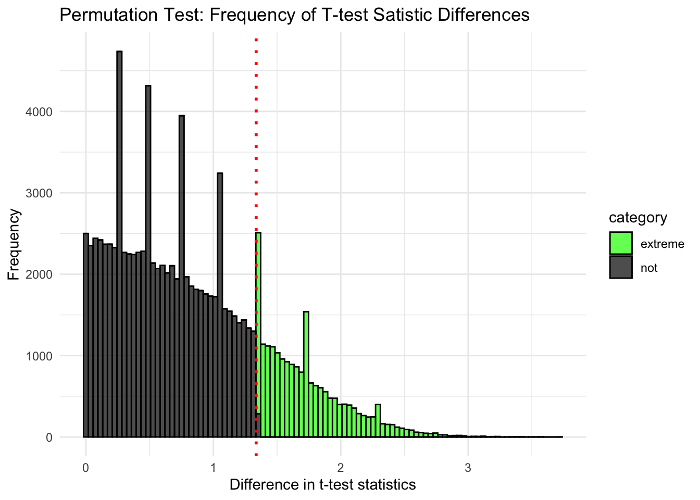
8.5.2 Selection set accuracy
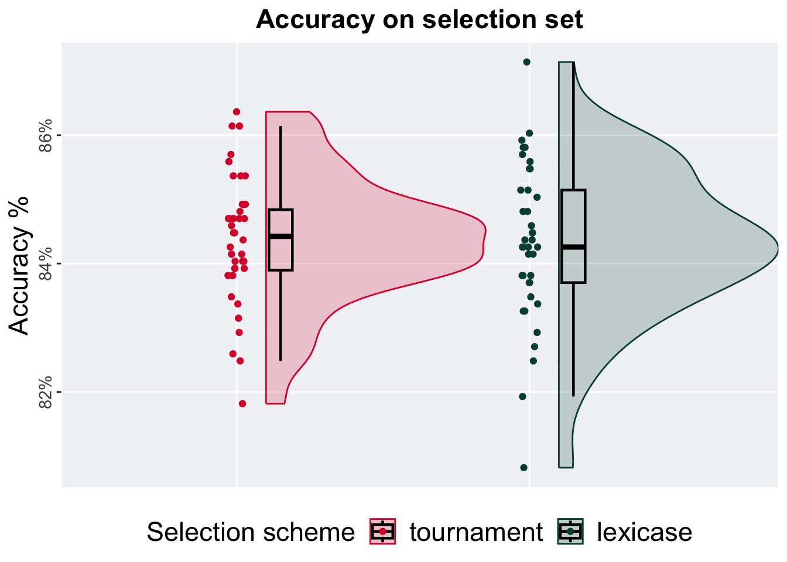
Summary statistics for the testing performance of the selection schemes at the 5% selection set split:
## # A tibble: 2 × 8
## selection count na_cnt min median mean max IQR
## <fct> <int> <int> <dbl> <dbl> <dbl> <dbl> <dbl>
## 1 tournament 40 0 0.818 0.844 0.844 0.864 0.00942
## 2 lexicase 40 0 0.808 0.843 0.843 0.871 0.0144The permutation test revealed that the results are:
tournament_results <- filter(task_data, split == '95%' & selection == 'tournament')
lexicase_results <- filter(task_data, split == '95%' & selection == 'lexicase')
permutation_test(tournament_results$training_performance,
lexicase_results$training_performance,
seed = 70,
alternative = "t")## [1] "observed_diff: 0.167199522669578"
## [1] "lower: -1.9996181495468"
## [1] "upper: 1.97561829637897"
## [1] "fail to reject null hypothesis"
## [1] "p-value: 0.86074"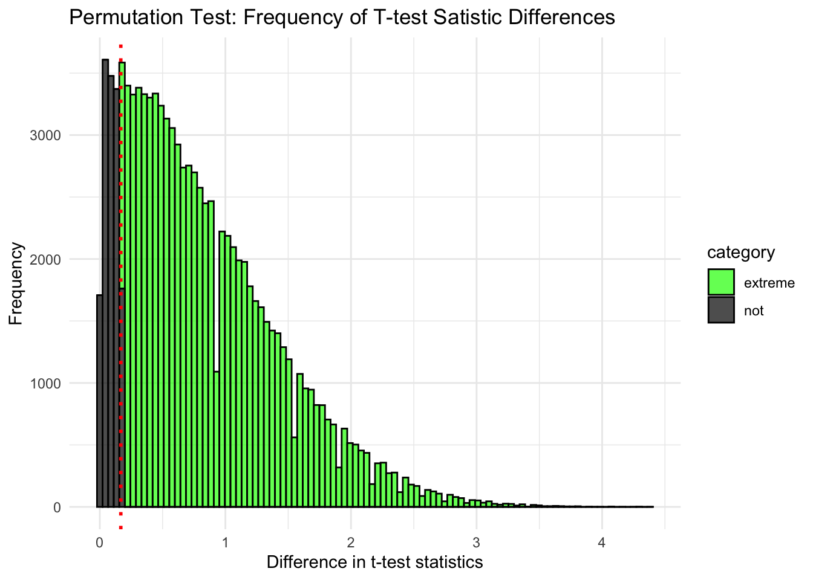